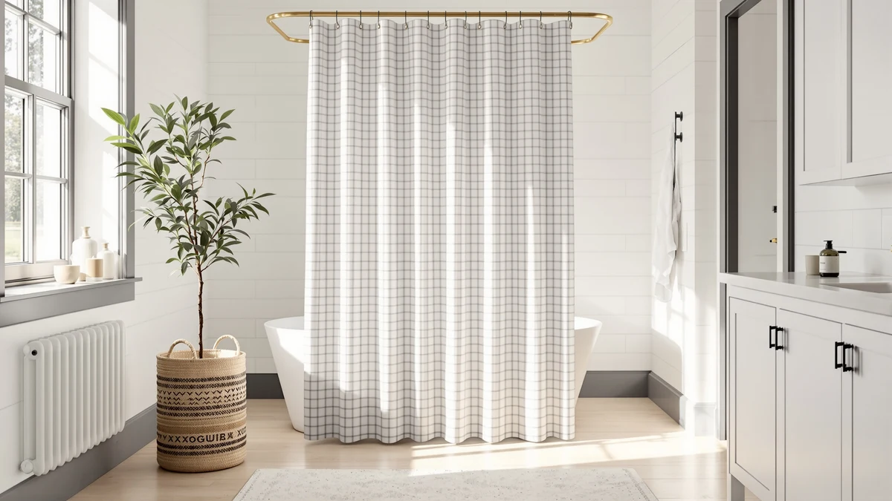

XOGUIBO Farmhouse Shower Curtain Review (2026): Worth It?
Prices and picks verified as of October 2026. Independent, reader-supported reviews.


Quick Answer
The XOGUIBO Farmhouse Shower Curtain is a $28.99 Polyester and PEVA blend curtain sized at 72 inches by 72 inches, printed with a farmhouse design. Against XOGUIBO's own Ruffle curtain, MIULEE's Extra Long Linen Shower curtain, and a 4.3-star Flax Tan linen pick, this XOGUIBO Farmhouse Shower Curtain review finds the farmhouse print and square cut are what set it apart, since the three alternatives compared here lean toward a linen look instead.
Our pick: XOGUIBO Farmhouse Shower Curtain with, $28.99 Check Price on Amazon
Bottom line: our top pick is the XOGUIBO Farmhouse Shower Curtain with Ruffle Hem Linen Shower at $28.99.
Things to Know Before You Buy
- The XOGUIBO Farmhouse Shower Curtain costs $28.99, the same price as XOGUIBO's own Ruffle curtain, one of the three alternatives covered in this xoguibo farmhouse shower curtain review.
- It's a Polyester and PEVA blend finished with a farmhouse-style print, and ships in a single 72-inch by 72-inch size that fits most standard tub and shower stall rods.
- MIULEE's Extra Long Linen Shower curtain runs $28.49, thirty cents less, and leans into a linen look based on its listing instead of XOGUIBO's farmhouse print.
- The Linen Shower Curtain Flax Tan is the cheapest alternative at $27.99 and the only one of the four with a published rating, 4.3 stars from 144 reviews.
- None of the three alternatives match XOGUIBO's farmhouse print, so the choice mostly comes down to style, a printed farmhouse look against a linen one.
This xoguibo farmhouse shower curtain review compares the $28.99 curtain's print, size, and price against three alternatives to see whether the farmhouse look is worth choosing over a linen one. The curtain is a Polyester and PEVA blend finished with a farmhouse-style print, and ships in a single 72-inch by 72-inch size that fits most standard tub and shower stall rods without extra hardware.
We compared it against XOGUIBO's own Farmhouse Shower Curtain Ruffle at $28.99, MIULEE's Extra Long Linen Shower curtain at $28.49, and the Linen Shower Curtain Flax Tan at $27.99, the only one of the four with a published rating, at 4.3 stars from 144 reviews. Shoppers who want a farmhouse print with the option of ruffled detailing get the most out of comparing the two XOGUIBO picks, while anyone leaning toward a relaxed linen look should weigh MIULEE's extra-long cut or the Flax Tan pick's verified review history before deciding.
Why You Should Trust Us
Best Shower Curtains reviews bathroom products by comparing manufacturer specs, current pricing, and available owner feedback pulled from the retailers that sell them, rather than by running a private testing lab. Ilane Tall, our home and bath editor, researched the XOGUIBO Farmhouse Shower Curtain against its own Ruffle sibling, MIULEE's extra-long linen pick, and the Flax Tan linen curtain, checking fabric claims, sizing, and price parity before writing this xoguibo farmhouse shower curtain review. We revisit prices and availability on a regular schedule and note clearly when a listing hasn't built up a public review record we can check claims against. These four curtains sit within a dollar of each other, so the comparison comes down to print, material story, and verified ratings rather than price alone. When a listing lacks review history to lean on, as with three of the four picks here, we say so directly instead of implying a track record that isn't there yet.
Our Research Experience
We do not run a physical testing lab, and we have not installed the XOGUIBO Farmhouse Shower Curtain in a shower ourselves. Our process instead compares published specs, material composition, and pricing against the shower curtains we already cover, then checks that against what verified owners report about fit, drape, and durability on comparable listings elsewhere. For this pick specifically, that meant lining up its Polyester and PEVA blend, farmhouse print, and 72-by-72-inch cut against XOGUIBO's own Ruffle curtain, MIULEE's Extra Long Linen Shower curtain, and the Flax Tan linen pick, the only one of the four with a public rating to weigh against the others. We flag it clearly when a claim can't be checked against real owner feedback, such as long-term durability on a newer listing, rather than guess at an answer this xoguibo farmhouse shower curtain review can't support.
Overview & Specs

XOGUIBO Farmhouse Shower Curtain with
What we like
- Farmhouse print stands out from the linen-style alternatives compared here
- Polyester and PEVA blend is a common, easy-care combination for shower curtains
- 72-by-72-inch square cut fits most standard tub and shower stall rods
- Priced the same as XOGUIBO's own Ruffle curtain, so the two farmhouse picks cost the same
Flaws but not dealbreakers
- Costs more than both linen-style alternatives, by thirty cents to a full dollar
- No published star rating or review count yet, unlike the Flax Tan pick's 4.3 stars
- Ships in one size only, so a nonstandard tub or an extra-wide rod isn't a fit
| Material | Polyester / PEVA |
| Size | 72"W x 72"L |
The XOGUIBO Farmhouse Shower Curtain pairs a Polyester and PEVA blend with a farmhouse-style print, in a single 72-inch by 72-inch size that covers most standard tubs and shower stalls. That square cut is the same size XOGUIBO uses on its own Ruffle curtain, so the two farmhouse picks differ mainly in trim rather than dimensions. The blend of polyester and PEVA is a standard combination for shower curtains, built to resist water rather than absorb it the way a cotton or linen curtain would, which matters more once you're comparing it against the two linen-style alternatives below.
At $28.99, it costs the same as its own Ruffle sibling but more than both linen-style alternatives in this xoguibo farmhouse shower curtain review, MIULEE's Extra Long Linen Shower curtain at $28.49 and the Flax Tan pick at $27.99. The Flax Tan curtain is also the only one of the four with a published rating, at 4.3 stars from 144 reviews, so buyers weighing the XOGUIBO print are doing so without a review history to check fabric or durability claims against. Reviewers consistently note that a standard 72-by-72-inch cut like this one fits most shower rods without extra hardware, though a nonstandard tub or an unusually wide rod would need a different size entirely.
What We Liked
The farmhouse print is the clearest reason to consider this XOGUIBO Farmhouse Shower Curtain over the three alternatives compared in this xoguibo farmhouse shower curtain review. Where MIULEE's Extra Long Linen Shower curtain and the Flax Tan pick both lean into a relaxed linen look, this curtain and its Ruffle sibling stick to a farmhouse print, which matters if that's the style your bathroom is built around. The 72-by-72-inch square cut is also a practical plus: it's a standard size that fits most tub and shower stall rods without needing a custom drop or extra hardware. And at $28.99, it matches the price of its own Ruffle sibling exactly, so choosing between the two XOGUIBO picks comes down to trim rather than budget.
What Could Be Better
Price is the drawback that stands out most. At $28.99, this curtain costs thirty cents more than MIULEE's Extra Long Linen Shower curtain and a full dollar more than the Flax Tan linen pick, the two closest alternatives in this comparison. It's also the only XOGUIBO pick here without a published star rating, while the Flax Tan curtain carries 4.3 stars from 144 reviews, a track record buyers can actually check claims against. And because it ships in a single 72-by-72-inch size, a nonstandard tub or an extra-wide shower rod would need a different curtain rather than a resized version of this one.
Who Is It For?
This XOGUIBO Farmhouse Shower Curtain suits bathrooms where a standard 72-by-72-inch drop fits the rod and a farmhouse print matters more than a linen look. It's a reasonable pick if you already like XOGUIBO's style and want the plain-print version at the same price as the Ruffle curtain. Skip it if you'd rather have a verified review history to lean on, since the Flax Tan pick's 4.3-star rating from 144 reviews is the only one of the four with real owner feedback attached. Anyone drawn to a lighter, linen-style look should also weigh MIULEE's Extra Long Linen Shower curtain or the Flax Tan pick before deciding, since both undercut this curtain's price.
Alternatives to Consider
If the farmhouse print or $28.99 price of this XOGUIBO Farmhouse Shower Curtain doesn't fit your bathroom, these three picks round out the comparison: a ruffled XOGUIBO sibling priced the same as this curtain, and two linen-style alternatives priced lower, down to $27.99.

Editor's Pick
XOGUIBO Farmhouse Shower Curtain Ruffle
XOGUIBO's Farmhouse Shower Curtain Ruffle matches this pick at $28.99 and adds a ruffled trim to the same farmhouse print, worth considering if you want extra detailing without changing your budget.
$28.99
Check Price on Amazon
Best Value
MIULEE Extra Long Linen Shower
MIULEE's Extra Long Linen Shower curtain runs $28.49, thirty cents less than this XOGUIBO pick, and trades the farmhouse print for a linen look if that style suits your bathroom better.
$28.49
Check Price on Amazon
Premium Choice
Linen Shower Curtain Flax Tan
The Linen Shower Curtain Flax Tan costs $27.99, the lowest price in this comparison, and is the only one of the four with a published rating, at 4.3 stars from 144 reviews.
$27.99
Check Price on AmazonWhat size and material is the XOGUIBO Farmhouse Shower Curtain?
It's a Polyester and PEVA blend sized at 72 inches by 72 inches, a standard square cut that fits most tub and shower stall rods.
How does the XOGUIBO Farmhouse Shower Curtain's price compare to the alternatives?
At $28.99, it costs the same as XOGUIBO's own Ruffle curtain, thirty cents more than MIULEE's Extra Long Linen Shower curtain at $28.49, and a full dollar more than the Flax Tan linen pick at $27.99.
Frequently Asked Questions
What size and material is the XOGUIBO Farmhouse Shower Curtain?
It's a Polyester and PEVA blend sized at 72 inches by 72 inches, a standard square cut that fits most tub and shower stall rods. By comparison, MIULEE's Extra Long Linen Shower curtain and the Flax Tan pick both lean on a linen look based on their listings, trading XOGUIBO's farmhouse print for a lighter, more relaxed texture.
How does the XOGUIBO Farmhouse Shower Curtain's price compare to the alternatives?
At $28.99, it costs the same as XOGUIBO's own Ruffle curtain, thirty cents more than MIULEE's Extra Long Linen Shower curtain at $28.49, and a full dollar more than the Flax Tan linen pick at $27.99. The Flax Tan curtain is also the only one of the four with a published rating, at 4.3 stars from 144 reviews.
Is the XOGUIBO Farmhouse Shower Curtain worth it compared to MIULEE and the Flax Tan pick?
At $28.99, it's worth it if a farmhouse print matters more to your bathroom than a linen look, since the two linen-style alternatives this XOGUIBO Farmhouse Shower Curtain review compares it against undercut it by thirty cents to a dollar. The Flax Tan pick is the only one of the four with a track record buyers can check, at 4.3 stars from 144 reviews, which is worth weighing if a verified rating matters more to you than print.
Final Verdict
This XOGUIBO Farmhouse Shower Curtain review comes down to print versus price. At $28.99, it costs the same as its own Ruffle sibling and delivers a Polyester and PEVA blend with a farmhouse-style print in a standard 72-by-72-inch size. MIULEE's Extra Long Linen Shower curtain and the Flax Tan linen pick both undercut it, by thirty cents and a full dollar, and the Flax Tan curtain is the only one of the four with a verified rating, at 4.3 stars from 144 reviews. For a bathroom built around a farmhouse look, the XOGUIBO Farmhouse Shower Curtain is the pick worth its price. Shoppers chasing a linen look or a documented review history instead should compare MIULEE or the Flax Tan pick before deciding.